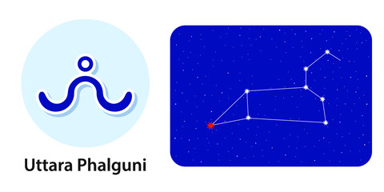

Nakshatra Uttara
Uttara Nakshatra
Characteristics male
One of the better personalities and characters, males of this nakshatra will have a very prosperous life as they are very hardworking and will also have a life full of good luck. These males will have a very disciplined life and will also be somewhat of a neat freak as one will rarely find their tables or workplace dishevelled. They will maintain a hygienic and clean lifestyle. Sometimes they will do things that they might regret in the future as they have a tendency to speak before thinking. They are usually a little impatient and have a low tolerance capacity. Because of that, even if they have a good heart, they might upset some people. They will indulge themselves in social work and overall have a life full of happiness.Profession male
Males of this nakshatra will rarely ask for help from someone else when it comes to their profession as he is believed to be a self-dependent person. Although they are never wrong in the decisions they make as they are very responsible in nature. They are also a very stubborn person as whatever decision they make can never be changed. They are honest in nature and will never imagine cheating someone and will despise those who try to cheat them.Compatibility male
Just like everything else, males of Uttaraphalguni Nakshatra will have a very healthy and happy married life with almost no conflict between them and their spouses. They will also have a spouse who will turn out to be a good housewife.Health male
Since males of this nakshatra will maintain good hygiene and cleanliness and a life of discipline, they will not have to be worried about their health much accept some minor issues such as liver issues, dental issues, body pain, and indigestion, but that too for a short amount of time.Characteristics female
Females of this nakshatra are believed to have a heart of gold and hold no grudge against anyone. Even if someone hurt them in some way, they are quick to forgive them as they believe in forgiveness to be the right thing in life. Because of this nature, females of this nakshatra will hardly have any enemies. Along with that they also have a very calm and cool nature which helps them to be focused and calm in difficult situations. Because of this, they are a very likeable person and people love to be around them.Profession female
Uttaraphalguni nakshatra females are very good in maths and have an easy way with numbers. So accordingly, they will turn out to be a very good maths teacher and can also have a career in administration. There is also a chance that they can have a successful career in the field of acting or modelling.Compatibility female
Females of this nakshatra will have a happy life after their marriage as their children and their husband will give them immense joy. They will be a very good housewife and will manage the household chores extremely well. Their husband will also be rich and because of that, there are chances that they might want to show off their wealth to others, which might result in them getting hurt by them because of jealousy.Health female
Apart from some minor health problems such as mild asthma, migraine, or menstrual problems, the health of the females of Uttaraphalguni Nakshatra will be mostly stress-free and they will live a healthy life.Ashwini Nakshatra Padas
1. Pada 1st: The first pada of this nakshatra is dominated by Jupiter and falls in Sagittarius navamsa. The influence of Jupiter is greatly shown in them as are a very ethical person who always strives to have a big and prosperous life.
2. Pada 2nd: The second pada of this nakshatra is dominated by Saturn and lies in the Capricorn navamsa. The people born in this pada are very practical people, influenced by Saturn, and live a very disciplined life.
3. Pada 3rd: Again dominated by Saturn, the third pada of this nakshatra fall in the Aquarius navamsa. The main focus for them is to fulfil their life’s goals, and they are, in general, very intelligent.
4. Pada 4th: Again dominated by Saturn, the third pada of this nakshatra fall in the Aquarius navamsa. The main focus for them is to fulfil their life’s goals, and they are, in general, very intelligent.